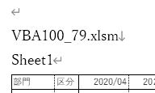

VBA100本ノック 79本目：Wordにセル範囲を図として挿入
Word文書に、シートのセル範囲をリンクしない図として挿入する問題です。
ツイートでの見やすさを考慮して、ブック・シート指定等を適宜省略しています。
出題
ブックと同一フォルダにdoc1.docxがあります。
ブックマーク「エクセル表」の位置から、
・ブック名
・シート名
・A1セルからの表をリンクしない図で貼り付け
同一フォルダに「doc1_yyyymmdd.docx」で保存してWord終了してください。
※完成は画像を参照
※シートは任意
https://excel-ubara.com/vba100sample/VBA100_79.xlsm
https://excel-ubara.com/vba100sample/doc1.docx
https://excel-ubara.com/vba100sample/VBA100_79.zip
頂いた回答
解説
Wordには「マクロの記録」があるので、やりやすい面もあると思います。
ブックマークの操作さえわかれば、ブックマークへのジャンプと文字列を書き込む部分は、ほぼマクロの記録のまま使えます。
Sub VBA100_80_01()
Dim wb As Workbook: Set wb = ThisWorkbook
Dim ws As Worksheet: Set ws = wb.ActiveSheet
Dim objWord As Word.Application, objDoc As Word.Document
Set objWord = CreateObject("Word.Application")
Set objDoc = objWord.Documents.Open(wb.Path & "\doc1.docx")
objDoc.Bookmarks("エクセル表").Select
objWord.Selection.TypeText ws.Parent.Name & vbVerticalTab
objWord.Selection.TypeText ws.Name & vbCr
ws.Range("A1").CurrentRegion.Copy
objWord.Selection.PasteSpecial Link:=False, DataType:=wdPasteEnhancedMetafile,
Placement:=wdInLine
Application.CutCopyMode = False
objDoc.SaveAs2 Replace(objDoc.FullName, ".docx", Format(Date, "_yyyymmdd") & ".docx")
objDoc.Close SaveChanges:=False
objWord.Quit
Set objWord = Nothing
End Sub
サンプル画像ではブック名の後は改行、シート名の後ろは改段落にしていて、上記VBAでは書き分けています。
図として貼り付ける場合のDataType等については記事補足に記載しました。
補足
Dim bm As Bookmark
Set bm = objDoc.Bookmarks("エクセル表")
先のVBAでは、Selectしてからその位置から順に出力しています。
問題文に添付した完成後の画像では、

| VBAの定数 | 文字コード | 意味 |
| vbCr | 13 | 改段落 |
| vbLf | 10 | 改段落 |
| vbCrLf | 1310 | 改段落 |
| vbVerticalTab | 11 | 改行 |
| 名前 | 説明 |
| IconIndex | DisplayAsIconがTrueの場合、この引数は、引数IconFilenameで指定したプログラムファイルで使用するアイコンに対応する数値です。 この引数を省略した場合は、1番目(既定値)のアイコンが使用されます。 |
| Link | Trueクリップボード内容のソースファイルへのリンクを作成します。 既定値はFalseです。 |
| Placement | Wdoleplacement定数のいずれかをすることができます。 1(wdFloatOverText):Float over text. 0(wdInLine):In line with text. |
| DisplayAsIcon | 真のリンクをアイコンとして表示します。 既定値はfalse。 |
| DataType | クリップボードの内容を文書に挿入するときの書式を指定します。 WdPasteDataTypeクラスの定数（下記参照）を使用します。 |
| IconFileName | DisplayAsIconがTrueの場合、この引数は、表示するアイコンが格納されるファイルのパスとファイル名です。 |
| IconLabel | DisplayAsIconがTrueの場合、この引数は、アイコンの下に表示されるテキストです。 |
| 名前 | 値 | 説明 |
| wdPasteBitmap | 4 | ビットマップ |
| wdPasteDeviceIndependentBitmap | 5 | デバイスに依存しないビットマップ |
| wdPasteEnhancedMetafile | 9 | 拡張メタファイル |
| wdPasteHTML | 10 | HTML |
| wdPasteHyperlink | 7 | ハイパーリンク |
| wdPasteMetafilePicture | 3 | メタファイル |
| wdPasteOLEObject | 0 | OLE オブジェクト |
| Wdpaた Tf | 1 | リッチ テキスト形式 (RTF) |
| wdPasteShape | 8 | 図形 |
| wdPasteText | 2 | 文字列 |
問題文でも、特に形式は指定しませんでした。
サイト内関連ページ
同じテーマ「VBA100本ノック」の記事
76本目：ボタンの表示名の位置へ移動
77本目：シート挿入イベント
78本目：グラフのデータ範囲拡張
79本目：Wordにセル範囲を図として挿入
80本目：読み取り専用で保存できないブックにする
81本目：全フィルターの絞り込解除
81本目：全フィルターの絞り込解除
82本目：ブックのドキュメントプロパティを取得
83本目：請求書を作成してPDF出力
84本目：ブックの自動バックアップ
85本目：請求日から入金予定日を算出
新着記事NEW ・・・新着記事一覧を見る
VBA100本ノック 100本目：WEBから100本ノックのリストを取得｜VBA練習問題（3月3日）
VBA100本ノック 99本目：自動席替え（行列と前後左右が全て違うように）｜VBA練習問題（3月2日）
VBA100本ノック 98本目：席替えルールが守られているか確認｜VBA練習問題（3月1日）
VBA100本ノック 97本目：Accessデータを取得（グループ集計）｜VBA練習問題（2月27日）
VBA100本ノック 96本目：Accessデータを取得（マスタ結合&抽出）｜VBA練習問題（2月26日）
VBA100本ノック 95本目：図形のテキストを検索するフォーム作成｜VBA練習問題（2月24日）
VBA100本ノック 94本目：表範囲からHTMLのtableタグを作成｜VBA練習問題（2月23日）
VBA100本ノック 93本目：複数ブックを連結して再分割｜VBA練習問題（2月22日）
VBA100本ノック 92本目：セルの色を16進で返す関数｜VBA練習問題（2月20日）
VBA100本ノック 91本目：時間計算（残業時間の月間合計）｜VBA練習問題（2月19日）
アクセスランキング ・・・ ランキング一覧を見る
1.最終行の取得（End,Rows.Count）｜VBA入門
2.RangeとCellsの使い方｜VBA入門
3.変数宣言のDimとデータ型｜VBA入門
4.マクロって何？VBAって何？｜VBA入門
5.Range以外の指定方法（Cells,Rows,Columns）｜VBA入門
6.セルのコピー&値の貼り付け（PasteSpecial）｜VBA入門
7.繰り返し処理（For Next)｜VBA入門
8.セルに文字を入れるとは（Range,Value）｜VBA入門
9.マクロはどこに書くの（VBEの起動）｜VBA入門
10.とにかく書いてみよう（Sub,End Sub）｜VBA入門
- ホーム
- マクロVBA入門編
- VBA100本ノック
- 79本目：Wordにセル範囲を図として挿入
このサイトがお役に立ちましたら「シェア」「Bookmark」をお願いいたします。
記述には細心の注意をしたつもりですが、
間違いやご指摘がありましたら、「お問い合わせ」からお知らせいただけると幸いです。
掲載のVBAコードは動作を保証するものではなく、あくまでVBA学習のサンプルとして掲載しています。
掲載のVBAコードは自己責任でご使用ください。万一データ破損等の損害が発生しても責任は負いません。